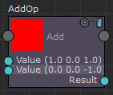
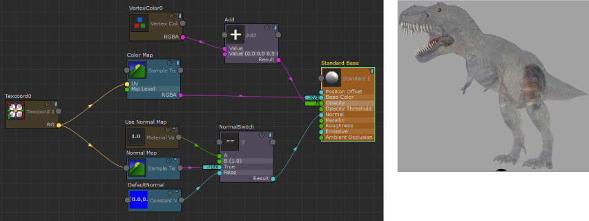

在 Stingray PBS 节点的 ShaderFX 编辑器中，创建一个节点，例如“添加”(Add)。单击节点上的任何输入属性以显示其属性编辑器。已将默认值指定给节点；在此例中为 0 0 0 0。
可以将此默认值更改为以下任一值。属性端口也会更改颜色，因为其默认值已更改为其他数据类型。
- int（深蓝色端口）
- float（绿色端口）
- float2（黄色端口）
- float3（浅蓝色端口）
- float4（洋红色端口）
通过设置输入上的默认值，可以执行操作而不提供外部连接。
例如，可以将“添加”(Add)节点的第一个输入设置为 (1, 0, 1)，将第二个输入设置为 (0, 0, -1)。单击“渲染样例”(Render Swatch)  图标，可看到“添加”(Add)节点样例变为红色。已添加两个输入默认值 (1, 0, 1) + (0, 0, -1) = (1, 0, 0)，而未连接任何外部输入节点。
图标，可看到“添加”(Add)节点样例变为红色。已添加两个输入默认值 (1, 0, 1) + (0, 0, -1) = (1, 0, 0)，而未连接任何外部输入节点。

但是，只要将节点连接到输入，指定的默认值就会被擦除并替换为新连接。
示例：用于确定不透明度的顶点颜色通道
以下示例演示了如何使用顶点颜色蓝色通道控制不透明度。
- 创建“添加”(Add)节点，并将第二个输入的默认值设置为 (0, 0, 0.5, 0)。
- 将“顶点颜色 0”(Vertex Color 0)的 RGBA 输出设置为“添加”(Add)节点的第一个输入值。
- 将“添加”(Add)节点的“结果(Result)连接到“标准基础”(Standard Base)节点的“不透明度”(Opacity)输入。
-
选择“标准基础”(Standard Base)节点上的“不透明度”(Opacity)通道以显示其属性编辑器，并将“组件混合”(Component Swizzle)值设置为 b。
从“融合模式”(Blend Mode)下拉列表中选择“透明”(Transparent)。
添加到蓝色顶点颜色通道的 0.5 值可导致具有蓝色的所有区域均为半透明。
在恐龙的腿上绘制了大量的蓝色。这些区域现在比其他区域更不透明，因为不透明度是由蓝色通道确定的。
